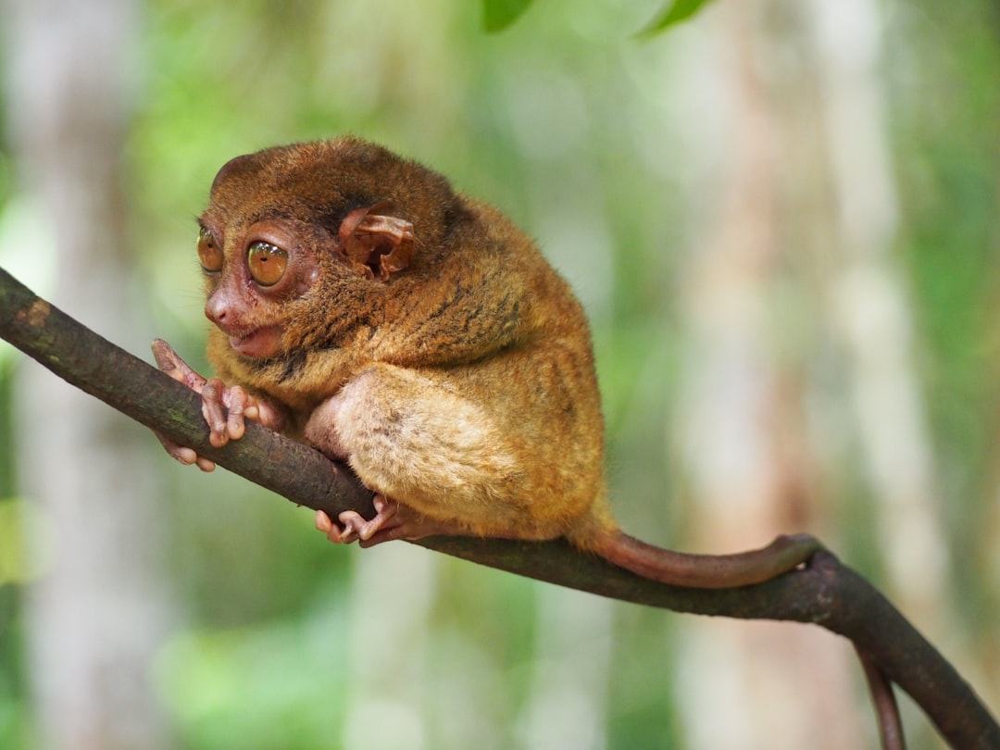
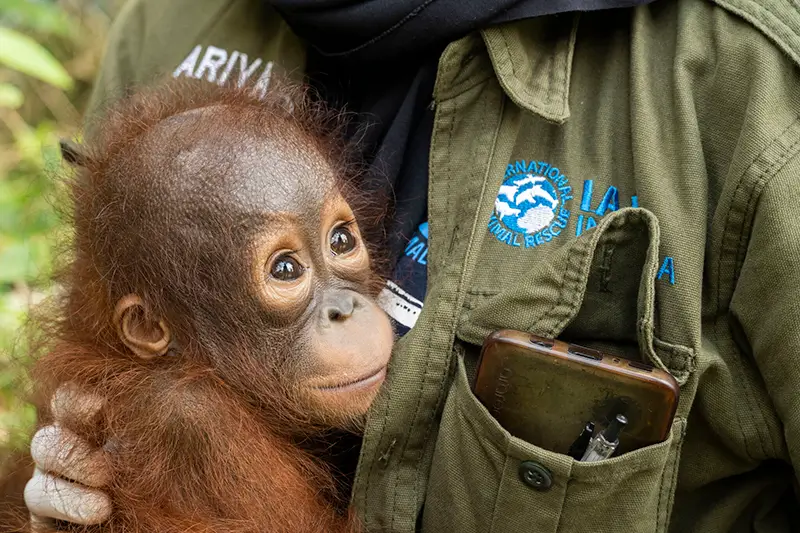
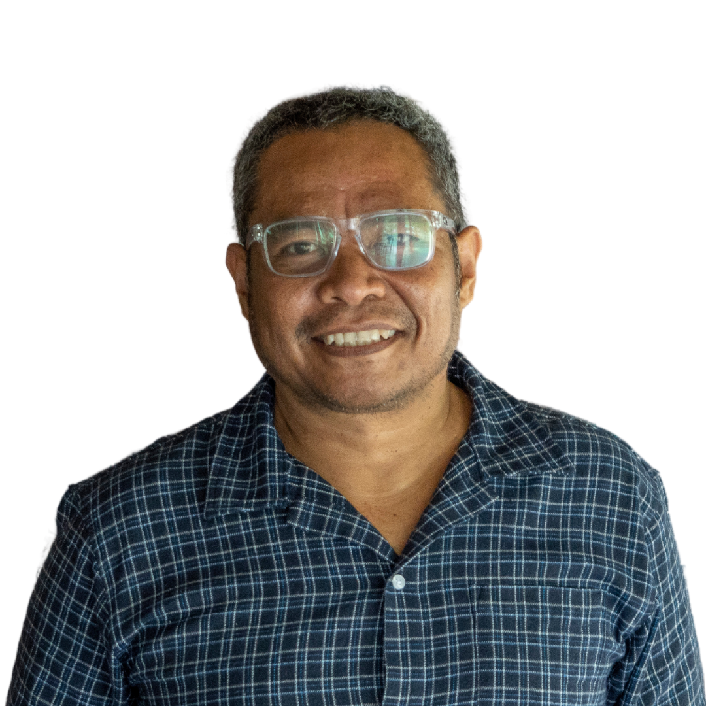
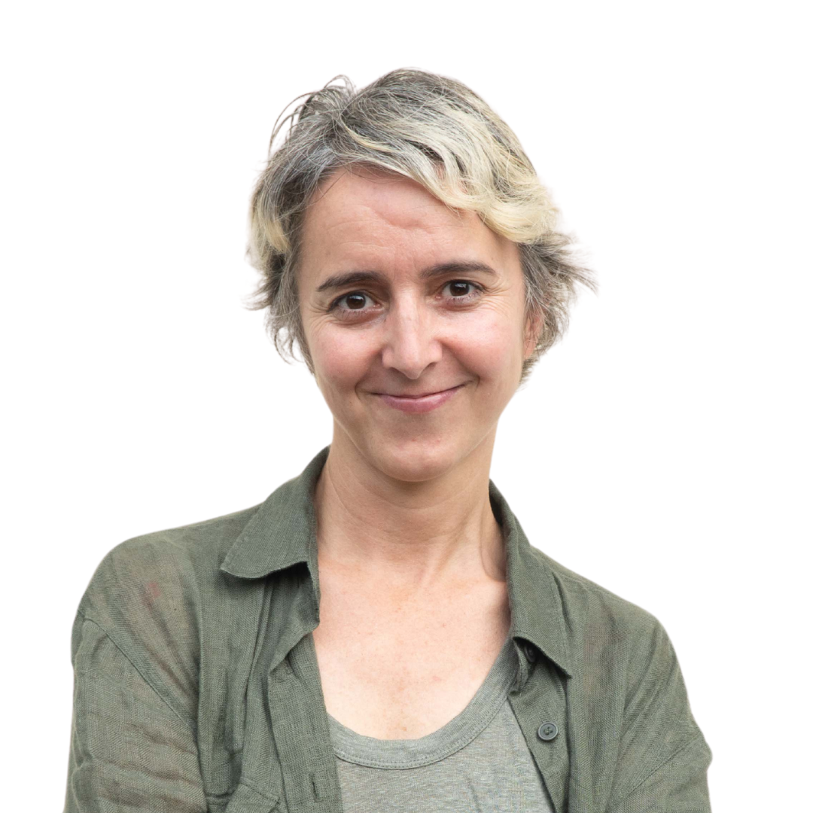
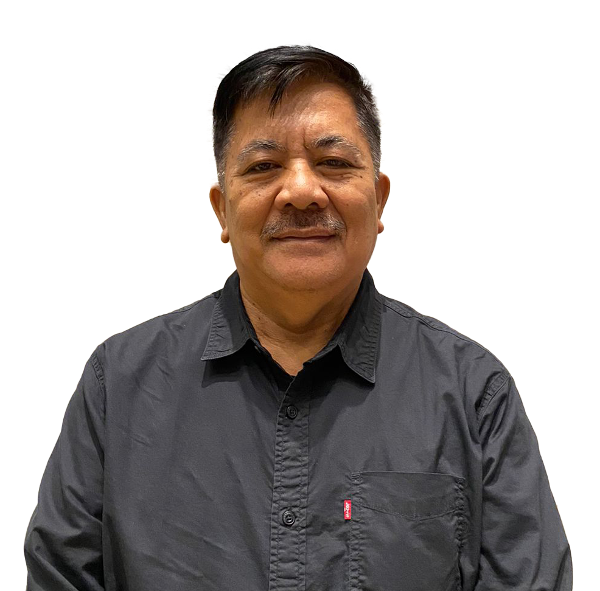
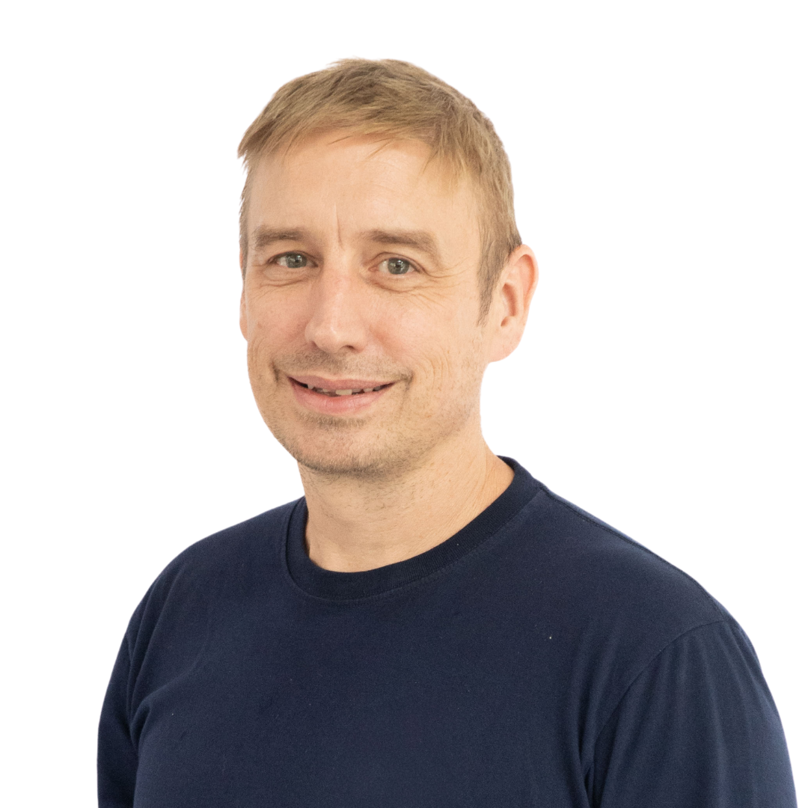
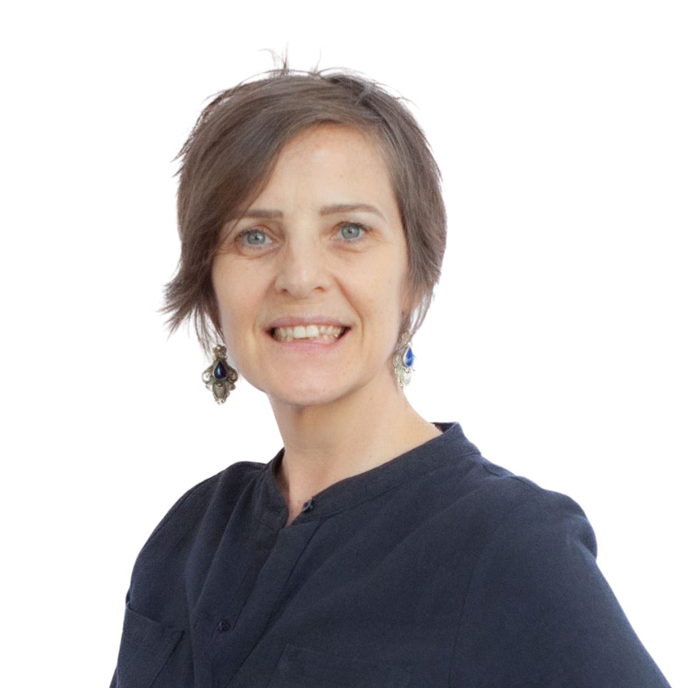
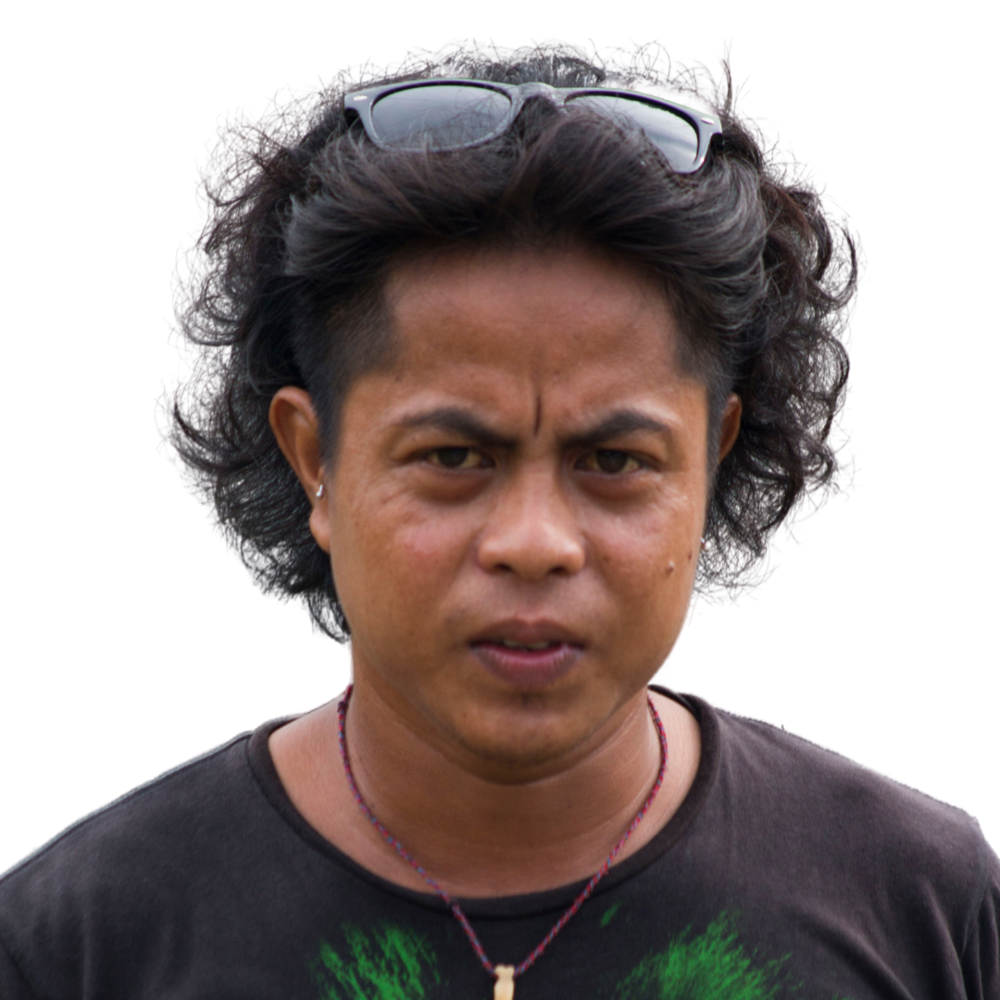

2007
Awal Fasilitas
Pusat rehabilitasi primata di Ciapus, Bogor didirikan khusus untuk kukang dan makaka, sekaligus menjadi pusat rehabilitasi kukang pertama di Indonesia.

YIARI berdiri untuk memberikan perlindungan, rehabilitasi, dan kesempatan kedua bagi satwa liar Indonesia yang terancam. Dari penyelamatan darurat hingga pelepasliaran kembali ke habitat alami.

Dunia tempat manusia dan satwa hidup berdampingan dalam ekosistem yang sehat.
Membangun kesadaran dan kepedulian serta mengimplementasikan sistem yang efektif yang melindungi satwa dan habitatnya.
Setiap aksi yang kami lakukan menghasilkan perubahan nyata: satwa diselamatkan, dipulihkan, dan kembali ke alamnya.
Pusat rehabilitasi primata di Ciapus, Bogor didirikan khusus untuk kukang dan makaka, sekaligus menjadi pusat rehabilitasi kukang pertama di Indonesia.
YIARI resmi mendapat status legal dan mulai menolong lebih banyak satwa liar Indonesia.
Pusat rehabilitasi orangutan di Ketapang berdiri lengkap dengan fasilitas medis dan kawasan hutan seluas ±200 hektar untuk rehabilitasi sebelum pelepasliaran.
Pusat pembelajaran di Kalimantan diresmikan dengan fasilitas lengkap untuk pelatihan, lokakarya, dan edukasi.
Dari penyelamatan satwa terlantar hingga pemberdayaan masyarakat, Setiap program dirancang untuk menciptakan dampak jangka panjang.

Didukung oleh pengurus dan profesional berpengalaman untuk memastikan tata kelola yang efektif dan berintegritas.
Pembina Yayasan
Pembina Yayasan
Pembina Yayasan
Ketua Pengawas
Pengawas
Pengawas

Ketua Umum

Ketua Program

Sekretaris Yayasan
Bendahara Yayasan

Advisor Program

Advisor Program

Direktur Operasional Program